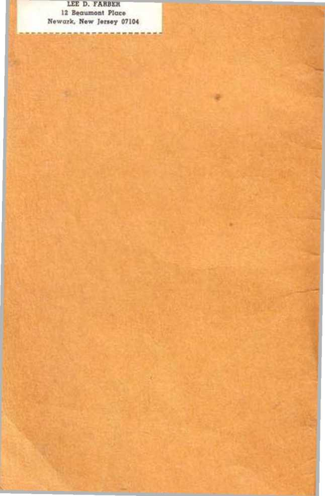
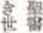
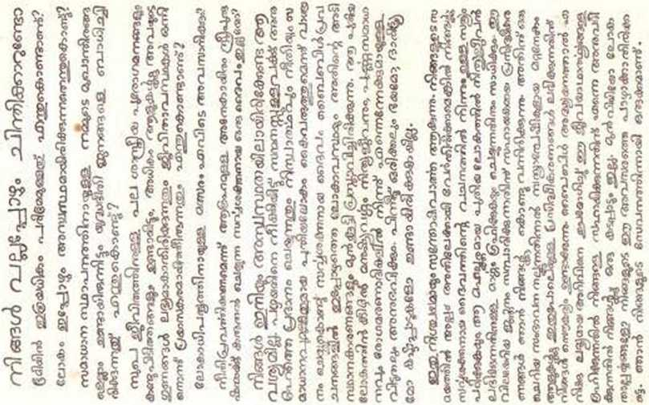

•'HE SENT THEM FORTH TO PREACH THE KINGDOM OF GOD"
And Centuries Later
‘ICOKI A GREAT CROWD, OUT OF ALL NATIONS AND TRIBES AND PEOPLES AND TONGUES, SAYING: •'SALVATION WE OWE TO OUR GOD" '
See 2 Timothy 4:2; Luke 9:2; lir.rrlatinn 7:9, JO, .Vcic World Tran^bitlon aj the I’hrinlhni Greek ftertphtrr*
YOUR RESPONSIBILITY
There is a responsibility upon all Christians to “preach the word" not only in their own tongue but to all nations. This booklet Is designed to help you do that even though you do not speak another language. If you meet someone in your house-to-house witness work who speaks a tongue you do not understand, let him read the witness in this booklet and then offer him one of the publications listed below that we have In his language. The same witness is reproduced in thirty of the most widely spoken languages of the world. We hope this booklet helps you as you "preach the word".
The Publishers
LANGUAGE SYMBOL
LANGUAGE SYMBOL
English: w, g, Ig. sr. dh. bn. gk Afrikaans: w, g. Ig. rm. bn. aa Arabic: w, Ijt, cl. bn. gw, aa
Armenian: lx. If. gw, gn Ccbu-Visayan: w. cl. If. gw, gn Chinese: Ig. If. cw, bn. gn
Danish: w, g, Ig, rm, CW, gn
Finnish: w, g, Ig, rm, cw, aa
French: w, g. 1g, rm. cw. gw
German: w, g, ig, nh. bn, gn
Greek: w, g. Ig. cl. gw, If
liollandish: w, g, Ig. rm, cw, gn Hungarian: Ig llocano w, Ig. cl, gw Italian: w, g, Ig, nh, bn, gw
Japanese: w, Ig. rm, cw, gn Malayalam: w. Ig Norwegian: w, g, Ig, rm. ew, It Polish: w, Ig. cp, if. gw
Portuguese: w, g. Ig, cp, cw, aa Russian: w. If, gw
Slovak: w,e),gw
Slovenian: w
Spanish: w, g, Ig, rm, bn, gk Swedish: w. g. Ig, el, ew. bn Tagalog: w. Ig, gw, gn
Turkish: If
Ukrainian: w, g, ig, el, If. aa Urdu: bn
Yiddish: lg.lt
Rjaboli gtten tHer to: wi Th« iralrltaMr m4««xlrx. tor a jear'a iub*rlpll«n.
Kt uaculm. 31 pxcm. tar a r«M'»
IX ■ -Let Cai Be True", 330-paxe arwtd. bird-bound book.
t»: loi, Svcue Atraiceiien tiai't S’tf WiU. :‘t paCM.
B2il ",\tr lhem< and a .War tlvll". liard-booad book.
rl; "TAla fterrtatliap Life". 320-M<» bound book.
ra- Il'Jta, //«» HeliotM Dm far Mankiair 333-piaa bauBd tKOk.
ep: "E^tppei fee fc'tfrp <iv>i Work'1, 3M-pac« beend book.
dh: U'ker fkr SciplKttt Hap "Sa/Hi-a.' After D>atK"f
e«: LWatUn rrraa* Tk ,V« U'*zM, lllMlj «< pj*r i-COktat.
If: Cm Fm tier F*r?Nz <■ Happ\a<t» it gvU>t S3 pa«rr.
<w: tlai't Mop It t^ee. ll-paxt qu«itl*ni apt •»!< !.
»n: "Thtt Cut .Vr»» Hr 33 »Hli
rt: H>M Kama—b» Cife Kltgian. 33-pa«» -own.
>.n: fat Brittf iai « .Vne WtrM, Gt-page Um«J> s A_,t.
Published by the Watch Tower Bible and Tract Society Made In the U. S A.
DO YOU EVER WONDER
Why there is so much distress in the earth?
Why the world is still so unsettled?
W’hy. with all our peacemaking agencies, fear of war haunts the people?
Why, with the many scientific advances and the inventions for enjoyable living, most people do not get the benefit of them and living conditions become more difficult?
Where the struggle for world domination will end?
Is there not an Almighty God who has made provision for the millions of men and women who want to do right?
You need not be in uneasiness any longer. The present world situation was foretold by the Almighty God in the Bible prophecies, showing the basic reasons for it and giving His promise to banish the old and usher in the unselfish, peaceful, righteous new world, which will bring blessings to persons of good will. Under that new world human creatures will enjoy everlasting life, complete peace, and freedom forever from disease and death. Then there will be no more fear, poverty, famine, misery, or suffering.
This is surely good news. If you are willing to devote a little of your time to doing so you can easily learn the truth from the Word of Almighty God and find the way to gain everlasting life in that wonderful new world. I bring you literature that will help you gain this valuable knowledge. By giving a small contribution for it you will make it possible for similar literature to be put in the hands of other truth-hungry persons. With no obligation to you, allow me to use the knowledge I have gained from a study of the Bible to assist you to learn these vital facts. Do not let prejudice or worldly interests spoil this opportunity for you. I am at your service.
WONDER U OOIT
Waarom daar soveel benoudheid op die aarde is?
Waarom die wereld nog so deurmekaar is?
Waarom, met al ons vredemakende magte, vrees vir oorlog die mense agtervolg?
Waarom die meeste mense, met die baie wetenskap-like vorderings en die uitvindsels vir 'n genotvolle be-staan, nie die voordeel daarvan kry nie en lewenstoe-stande al hoe moeliliker word?
Waar die stryd om wSreldheerskappy sal eindig?
Is daar nie 'n Almagtige God wat voorsiening gemaak het vir die miljoene mans en vrouens wat wil doen wat reg is nie?
U hoef kie langer onrustig te wees nie. Die teen-woordige wereldsituasie is deur die Almagtige God in die Bybelprofesieii voorspel, en toon die grondredes daarvoor en gee Sy belofte om die oue te verban en die onselfsugtige, vreedsame, regverdige nuwe wfcreld wat seeninge aan persone van welwillendheid sal bring in te lei. Onder daardie nuwe wfireld sal menslike skepsele die ewige lewe, volkome vrede, en vryheid vir ewig van siekte en dood geniet. Dan sal daar geen vrees, armoe-de, hongersnood, ellende, of lyding meer wees nie.
DlT IS SBKERUK GOEIB NUUS. As U gewillig is Offl 'n bietjie van u tyd te bestee om dit te doen, kan u maklik die waarheid uit die Woord van die Almagtige God te wete kom en die weg om die ewige lewe in daardie wonderlike nuwe wdreld te verkry. vind. Ek bring vir u leessstof wat u sal help om hierdie kosbare kennis te verkry. Deur 'n klein bydrae daarvoor te gee, sal u dit moontlik maak vir soortgelyke leesstof om in die hande van anden* persone wat na waarheid honger ge-plans te word. Laat my toe om die kennis wat ek uit ’n stu-fle van die Bybel opgedoen het, sonder enige ver-pligting van u kant, te gebruik om u te help om hierdie lewensbelangrike feite te wete te kom. Moenie toe-laat dat vooroordeel of wcreldlike belange hierdie ge-ieentheid vir u bederf nie. Ek is tot u diens.
:%‘U* eLi; J*
X y ol>l_jU»Vl J lx»
*JV> Jjfc-’l f“ c** jju^i jiy j.j O-Ui j^. uyJi bUj
yxJb jA'i ^L^V ;^cJi jy ;U!I J»‘Uj J»U>lj ^UJ* f-Ul bUj
£. iby iUJlj «U. J^■■•^ V y*.A’l JlU ^.Ul s^UJl i>Ul J>l > M >Jl j»b
JU^-'lJv yt» oX' til L~C>- ■*» »^.1> J“"’ A?l ■'•" VI
SjJUl J-Jl j ^i\Jl •UJIj 4> •jJl Jl_**l JV • Xv Uj ।y'U ^*7* JI U ^b V ^UVI <bT- J LU z.uJI <JVI Jr-
ta. -i> JL jUJ • । pJLJl <Jljt • If* j-U <_L>\I
oU'l^ji! oU'_^lu(iU,^U .U-UVIrJ*j f'AJlj ^U'ljJU
Jlc • »lT A» X I »Lx< _A/l ■*-’ ?••■• (Jb • VaJ| J\'tj -Uu'!,. A ro/lj (XJL
(jl U»- C»Jjl bU :i'jL« <«-la£ SjU l$J Li
,_Uk7 jl ■*-'_•+—» CU£»I j^VI •«£-*»- <-3y«J <2h5j SLj »L-»Jl ^jjul £Zi_*j]a}I <• ._jjl • ty_J*)l «il obj«lx< (jVI »iU c"^* ' ■«—»*Jl XJ>-I pjLdl (3 ■** X \l
I4XJ/ sibJI dTVj • A—jJl ijyJ.1 »X» jl■P-ljjb ±Ul_J cr' j* -z*' L-.jy uA •u^-'-
ly j^l^*“'l JI • jXl
<U>-l *x* **_>**</x 41»xcl—»j
<>^iJl »A* «oUx^VI JA kiu_j» I* dte. Jjl ^H~Jlj • '2Ux>J !>■* » L j? j • a»v Ui
UJ*lbOf UhSlU.Tr WSIUI.
P'f,* fujup.ut mui^liiHUj Ifiuj Lplfpf.ii •/f.it.ji
fl'l,’ fitin'. ui;fnuip4i> gf.n Ifuijnit .ffthiuff iff inctf. I
/>{' fitln^L f-i--iu.,l„.piiul1, 4,„Jh.p uijlf.ut fmtpbp pu,.[.mbit —ilu..l.t V-AA* —4 <■
A4 ' 4uiffuinm/f .utr.p up iui&nj.Hfft If hut’ll f J'muf p h fn«, iuijuip .mitt Jp gfiinuilfuit jmn “if’/ f.Jn.p f.itWip n. Huifphf bgu.fr kt, Kh i ul uun&ujiip np »f (uu jb lj*oy umi JiV Lt
pApM^r4p«j^^ jJ uAAjL p p Ijp ff / Jt 1 *1 p uAi ui*b |
H-1' lfnf.Lp n\p uff^f. /kpfutt^j.
frl' lupgbi.f 1^’“''J UjfbtmtfU.png Huuinuufr Jp' np u.pgu.pnl— Pfn.il ptbfn. ^.Hnf....fng Jf.ffntu.inp u.jpkpni b. fffitbpn, 4.u-JU.p VuifllUlUfUl.HpUlUIHn.pflt.V Jp ppH.fr CltMJ *
'inh’fl IMLbhU Ullhlh’fi /H.u,<n7n.t,fn^, HJfrtu.lfu.png
Uuu.nlu.fr U. <lpn9 JH.pgu.piH.p/.Lltirn^ guL.uilfu.fr fp p.up4fi iihpffULj ffu.jn.pf.tp, J..JJ inutjn.f .HUtnp 4f.Jt.ulfu,t UftuiftCninp tfL [vtiwuAjut[n»l »'j6hv* m»^nap\p rii jut-
HH.f pltpfif u.t.u.<iuptgf.'p. p>H.fu„fptf, iupgu.pui.fH.'in tup n.f-fu.upip, up opitu.pptthp ..fP„f. phpi pu.pl.,..y.ulfu,J J...prf..y. Uji ^-r •Hi' ^r-^rtL
ftt jun fuiktiutfui't ffhu/tp, puiyutpJu.' If fuHiifU.ifn. p fail, h.. J/’p .nptiLt.ulpu't u.gu.u..,.p(..t, Ujg J h, J u.t... If' .ujfliLM gnj,.lpf..t ..ff.uif. .HLthtiut ^u.p, jp.ui npn. p fit, un.f, tbifn.pf.Lt ffuij PfHLU.nn.pii.tt
I'JIh'fH UMUJPiWtr fiUTh' UlbP ITCl (■< bpf jn.f joJu.p[., pf.t Jp Ju.Ju.tu.lf ...Ulf, HJbtu.ffu.pn.f Uuu,HLfrnj Ifoupl t l/ptuip if fl. p,„ pi,u,Jp i.J.upu.n.pf.Ltp u.ip.ff.f bl ULjg gj.ujfbff. tnp
J if JUJ!/•mbhulfMl Jfkliuty &uttT puAt hu ibtfli
tfp ph pl. J »{p»tl(UtlfHt P [till nC by^inft Oy)>^ •Ibhmp-
/Iff .iPHlUPflLtp u.nu.tiuf l Hump Zujifuip uf>fu.[>lf Vn.^p J'ptb-l"'/.' 'f'r u/Pufiugt^p up &.J...pu.n.pL..<t Ifuipuutp pu..n.f n.pf.. u.VJlp tJu.tOpf,tu.tf^ypu,f(u.t..iPf..t uinu.tu.ti Pnjf u.n.{p f.tb/, up U • ‘bfj nLMnutT.uiuf.ptii.pbu.jp umutjiufr g fiutn. Pf.itu gnp— butbli/Lif* ^bgf. nifthJ uijn IfbtitutIf...1. ftpngn*.pbiutj mbifblfUHi tutftii I trp PntfHt.p np n/.i{ tuifiiuufuuu.pinj tfuij ui.purpi.ujf.t 4btu.uuftg m.Jttip Jbg u/pgfifbt uiju ufuruibsn.pbtlt .gu.n.l.ft, Hnu.'ty gp,uJu,lfu,t ^n/uu.pf.tn.pb.Ht' bu ufu.utpu.uu. bJ n.pu^ pnipbuijp ibgf. fru.nujjbfnLl
NAKAPAMALANDONG KA BA
Ngano nga anaay dakung kasakitan sa yuta?
Ngano nga ang kalibutan wala pa gihapon mahimu-tang?
Ngano, uban sa tanang ahensiya alang sa paklgdait. ang kahadlok sa gubat daw nagalisang Sa kata whan?
Ngano. uban sa daghang siyentipikonhong mga pag-•uswag ug mga inbcnsiyon alang sa hamugawayhg pag-puyo, ang kadaghanan sa mga tawo wala makakuha sa kaayohan gikan kanila ug hinoon ang mga kahimtang sa panginabuhi nagakahlmong labaw kalisud?
Asa matapus ang pagpakigbugno alang sa pagmando sa kalibutan?
Wala bay usa ka Labing Gamhanan nga Diyos nga naghimog tagana alang sa milyones ka mga lalaki ug mga babaye nga nagatinguha sa pagbuhat sa maayo?
Ikaw dim na kinahanglan nga anaa pa gihapon sa kahimtang nga pagkawala mahimutang. Ang kahimtang sa kalibutan karon gitagna sa Labing Gamhanang Diyos diha sa mga tagna sa Bibliya. nga n^gapakita sa sukaranang mga katarungan mahitungod niana ug nagahatag sa Jyang saad sa paghanaw sa daan ug sa pagpasulod sa tiili-hakug. malinawon. matarong bag-ong kalibutan nga maoy magdalag mga panalangin alang sa mga tawo nga may maayong kabubut-on. Ubos ni-anang bag-ong kalibutan ang tawhanong mga linalang magpahimulos sa kinabuhing walay katapusan, hlngpit nga pakigdait, ug kagawasan sa walay katapusan gikan sa mga sakit ug kamatayon. Unya wala na gayuy ka-hadlofc. kakabus. kawalad-on, kallsdanan, ug pag-antus.
KlNI TINL'OD OAYUD NGA MAAYONG BALTTA. Kon ikaw buut mohalad sa imong diyutayng panahon aron sa paghimo niana ikaw madaling makatuon sa kama-tuoran gikan sa Pulong sa Labing Gamhanang Diyos ug makakaplag sa dalan o paagl sa pag-angkon sa kinabuhing walay katapusan niadtong makatilingala nga bag-ong kalibutan. Ako nagadala kanimo ug basahon nga makatabang kanimo sa pag-angkon niining bililhon nga kahibalo. Sa kubos nga kontrlbusyon alang niana mahimo nimo sa pagpahimutang sa samang basahon naganha sa mga kamot sa ubang mga tawo nga gina-gutom sa kamatuoran. Walay obligasyon alang kanimo, tugoti ako sa paggamit sa kahibalo nga akong naangkon gikan sa usa ka pagtuon sa Bibliya karon sa pagtabang kanimo sa pagkakat-on niining mga hinungdanong kamatuoran. Ayawg tugoti nga ang pagdaplgdapig ug kalibutanong interes magadaut niining hlgayona alang kanimo. Ania ako alang sa pag-alagad kanimo.
sswfttmgitfjs ?
mtw^wa > Arjat®^
wwmmw ?
i’J] > *£mma»' ifo'&teWWW MRM^f
^WUtOHWnUi amW«&£ftl
CHI^saRTS?» »fm-uax&M IL » WjAfll • ffi
waw&w* w,'r•
jS5SWft1@»j8JB »
PJHfl5feW^ * imffiiH'&MJta't&fcte Etff W iff ( « *?. ] 44'i^.d^
Laimas»###«£»#«#* ttftRffl > A&teflMW*
Mi‘f $ «> m$£imW8 o > afc*
TWa^Wrfn^ia ’ ftOfl^WKl
UNDRER DE DEM NOGEN SINDE OVER
Ilvorfor der er sA megen nod pA jordenf
Hvorfor verden stadig er sfi usikker?
Ilvorfor krigsfrygt plager folket trods alle vote fredsstifteres virksomhed?
Ilvorfor de fleste mennesker ikke fAr nogen gavn af de mange videnskabelige fremskridt og opfindclser, dor kunne gore livet mere behageligt, og hvorfor levevilkArene tviertimod forvarres?
Hvor kampen om verdensherredommet vil ende?
Om der ikke er on alnuvgtig Gud, der har draget omsorg for de millioner ina-nd og kvinder, som onsker at gore det rette?
DE BEH0VER IKKE kengere at viere icngstelig. Den nuvierende verdenssitnation blev forudsagt af den alma-gtiue Gud i Bibelcns profetier, som viser den cgcntlige Arsag til den og forta-ller oiti hans left© om at fjerne den gamle verden og indfore den usel-viske, frediyldte, rctfterdige nye verden, som vil bring© velsignelser til retsindige mennesker. I den nye verden vil mennesker ghede sig over evigt liv, fuldkommen fred og evig udfrielse fra sygdom og dod. SA vil der ikke mere vture nogen frygt, fattigdom, hungers nod, ulykke eller nod.
DET ER I SANDU ED GODE NYITEDER, Hvis De er villig til at ofre lidt af Deres tid pA det. kan De let here sandheden ud fra den alm>ige Guds ord at kende og tinde vejen, der forer til evigt liv i den vidunderlige nye verden. Jeg har litteratur med, som vil hjielpe Dem til at opnfi denne va'rdifulde kundskab. Ved at give et lille bidrag for den, vil De gore det muligt, nt lignende litteratur kan Itegges i hrenderne pft andre snndhedshungrende mennesker. Tillad mig at brugc den kundskab jeg har opnftet ved stadium af Bibelen til udon forpligtelse for Dem at hjadpc Dem til at Itere disse betydningsfulde kends-gerniuger. Lad ikke fordomme eller verdslige interes-ser odela'gge denne lejlighed for Dem. Jeg star til Deres t jcneste.
IHMETTELETTEKO KOSKAAN
Miksi maan piialla on niin paljon ahdistusta?
Miksi maailma on yha niin epavakainenf
Aliksi sodan pelko vaivaa kansoja kaikista rauhan aikaansaarniseksi telidyistayrityksistiimme huolimatta?
Miksi useimmat ihmiset civat saa nauttia monist a tieteellisista edistysaskeleista ja midlyttaviin daman hyvaksi tehdyista keksinnoistii, ja miksi olosuhteet kayyat yha vaikeammiksi?
Mihin paattyy taistclu maaiiman hallitsemiscsta?
Eiko ole olemassa Kaikkivaltiasta Jumalaa, joka pi-taisi huolta niista miljoonista miehista ja naisista, jot-ka haluavat tehda oikein?
TETDAN El TARVITSE olla cnaa levoton. Kaik-kivaltias Jumala ennaltaihnoitti nykyisen maailman-tilan Raamatun ennustuksissa, mitka osoittavat perus-syyt siihcn ja esittaviit Hanen luvanneen havittaii vanhan ja valmistaa epaitsekkaan, rauhaisan, vault urskaan utidon maailman, mika tuo siunaukset. hy-vatahtoisille ihmisille. Ihmisluomukset saavat nauttia tuon uuden jnaailman alaisuudessa iankaikkisesta da-mast# ja tiiyddlisesta rauhasta ja olla ainiaan vapainu sairauksista ja kuolemasta. Sitten ei ole enaa pelkoa, kfiyhyytta, nllkaa, kurjuutta eika karsimvsta.
TAMA ON TOTISESTI HYVA UUT1NEN. Jos olette halukas omistamaan hiukan aikaanne, niin voit-te oppia helposti totuutta Kaikkivaltiaan Jumalan Sanasta ja loytaa tien. mita kulkien saavutatte ian-kaikkisen daman tuossa ihmedlisessa uudessa maail-massa. Tuon Teiile kirjallisuutto. mika auttaa Tdta saamaan tiimiin arvokkaan tiedon. Antamalla siitii pienen korvaukscn Te teette mahdoUiseksi samanlai-sen kirjallisuudpn viemisen toisteukin totuutta isoa-vien ihmisten kasiin. Sallikaa minun kayttaii sitii tic-toa, mink# olcn saanut tutkimalla Raamattua, aut-taakseni Teita oppimaan nama tarkeat tosiasiat vd-voittamatta Teita mihinkaiin. Alka# antako ennakko-luulojen tai maallisten harrastustcn riistaa itseltanne tata tilaisuutta. Olen palvduksessanne.
VOUS ETES-VOUS JAMAIS DEMANDS
Pourquoi une telle detresse accable la terre? Pourquoi le monde est toujours si trouble?
Pourquoi la crainte de la guerre haute les gens, malgrtf toutes les institutions pour le maintierrde la paix?
Pourquoi la plupart des hommea ne peuvent profiler des progrta scientifiques et des inventions permettant une vie plus agr&ible, et pourquoi les conditions de vie em pi rent?
Quelle sera Tissue de la lutte pour la domination mondiale ?
N'y a-t-il pas de Dieu tout-puissant qui ait pris des dispositions en faveur de millions d’humains desireux de pratiquer la justice?
Ne soyez plus inquiet. Le Dieu tout-puissant a pr6-dit dans les prophetics de la Bible la situation mondiale act nolle et ses causes principals. II nous donnc en outre Sa promesse de supprimer ce vieux monde et d'intro-duire le monde nouveau purifi6 de Tigoisme, pacifique et juste qui auportera les benedictions aux personnes de bonne volontC. Dans ce. monde nouveau les humains jouiront de la vie eternelle, d’une paix parfaite et seront pour toujours liberos de la maladie et de la mort. Alors, la crainte, la pauwete, la famine, la mis6re et les souf-frances n’existeront plus.
Ce SONT VILAiment de bonnes nouvelles. Si vous etes dispose A consacrer un peu de temps A 1’^tude. vous pourrez facilement appreudre la v6rit6 de la Parole du Dieu Tout-Puissant, et trouver le moyen d’obtenir la vie Eternelle dans ce merveilleux monde nouveau. Je vous apporte des publications qui vous aideront A acquS-rir cotte precieuse connaissance. Votre modeste contribution pour ces publications pennettra de les offrir A d’autres personnes qui ont faim v6rit£. Sans aucun engagement de votre part, permettez. moi d’employer la connaissance acquire par I’&ude de la Bible pour vous aider A apprendre ces v6rit6s. Que les prejugfe on les int6r£ts de ce monde ne vous empeehent de saisir Poecasion qui vous est offerte. Jesus a votre service.
HA BEN SIE SICH JE GEFRAGT
Warum os soviel Bedriingnis gibt auf Erden?
Warum die Welt so unstet ist?
Warum trotz aller Friedensvernuttlungen Angst vor Krieg das Volk beschlcielit ?
Warum die moisten Menschen nicht profitieren von den vielen wisscnschaft lichen Fortschritten und Erfind-ungen, die das Leben genussreich gestalten konnten. und warum die Lebensverhiiltnisse schwieriger werden?
Wo der Kampf urn die Weltherrschaft enden wird?
Gibt es denn nicht einen allmachtigen Gott, der fiir die Millionen von Mannern und Frauen, die recht tun wollen, Vorsorge getroffen hat?
Sie brauchex daruber nicht mehr beunruhigt zu sein. Die gegenwiirtige Weltlage wurde vom Allmachtigen in den Prophezeiungen der Bibel vorausgesagt. Diese zeigen Ihnen die Grundursache davon sowie Gottes Verheiss-ung, die alte Welt hinwegzutun und die selbstiose. friedevolle, gerochto neuo Welt einzufiihron, welehc don Menschen guten Wil lens Segen bringn wird. In dieser neuen Welt werden sich die Menschen ewigen Lebens, volligen Friedens und dauernden Freiseins von Krank-heit und Tod crfreuen. Dann wird es koine Furcht, Annut, Hungersnot, Leiden und kein Elend mehr geben.
Welche gute Botschaft ist dies doch ! Mit Ix»icht-igkeit konnen Sie die Wahrheit aus dem Wort des allmachtigen Gottes kennenlernen und den Weg zu ewigem Leben in jener wunderbarcn neuen Welt linden, soiern Sie willens sind, ein wenig von Ihrer Zeit hierauf zu verwenden. Ich bringe Ihnen Schriften, die Ihnen diese wertvolle Erkenntnis erlangen he!fen. Wenn Sie einen kleinen Beitrag dafiir geben, konnen solche Schriften auch in die 11iirule anderer wahrheitshungriger Menschen gelegT werden. Diirfte ich die Erkenntnis, die ich aus einem Studium der Bibel erlangt habe, ohne Verpflichtung Ihrerseits dazu gebrnuchen, Ihnen diese wichtigen Tatsaehen kennenlernen zu helfen ? Lassen Sie sich diese Gelegenheit nicht durch Vorurteilc oder welt-liche Intereasen entgehen! Ich stehe Ihnen zu Diensten.
•Soo iDagpig Uio w:i[3 -ujOinxaa aUx Iixad AnooadroJip 5po da DXAOdadntAO pziiiooz px li wUUvpxnzodr Mix 3X30tid>» Atift 'Sangli'fp Sfzixw5 Six SjxnD aiagptl da moUgUog Spo da piA Slix Uxyprt lu grp uolixxorn a>7-} noir iooiaA Ux
tnohioroifioUdZ da noil ^xnAidxirj ‘Sdo Snodyl x.j uxoaAXor.t pnltlDz SiOoiy A,.u aiioauv nor Aiorigxp Ao»*f(p
Did^Z mo Du.iiA} Diorig Aijogn da AgxDAng 3130U10DXDX pg ‘nxnn ,iA iidoJiomao kdxnl pnl Sdxaoajv -iocoaA kxnn InhipYor Alix axsokxzorp ,A A.wokgUog Spo pg noir dlmiaj Ddo.bpig OlAOadl Spx ‘AOtfOOX AOJA A0AJ3X3 AOMipif.lDQ AgX0 Stl<l>* AOlAfllJD loUxzorn Alli piZ. oitodg ox axkdg da toz axagpil Atu da Dyoxnj axisOoinl *no3Q noripAngoiAB|| nox AoApyr aox giro Duglr(p Alix sxagpil da piA Soo noApdZ aox Sodpl axatxodathp da Soil -agodu 300)3 av. -V3N VVVM a?5VV<I>XV IV.KI3 V.I.AV
*D)dannDipi U SUxgr/gp ‘daiw ‘nj-vix '5opp;b nir UZOpiai pg A3g Jxpj, ’oidado |»x duaiodd oi-’p UXDY^nvp Umxoxadu d»z tiAkdp d>3V3X 'limb djaotd AaotMnyoirp ,g nxmlopyi: DAimOo-An nx 'aoiIoox aoahz3 ao?a aoi •SaoirwdpAD S(D3ol,i73Q SUvnz Snoxo SajAovas Ud3i> pg Soioiro p •AOllapX AOJA AOIDZig ‘ApziAtldU ‘UV-UOlgUD AOX U/'.pADOll pg TOZ Aonopz AOIDVDX* ApX UoU^.dDlDZ pg 11J 00^ JUlZOOKA AltX AnoX3dnic i»x SIiuid SroaopioDinz Siu 5ju)» SrxioDp 5p aaoa -<nd3ADd> Sajoirp jo ‘Hj&dOj -D‘Aya Slix SpaxUdiotar 5>xo ApaQ AotfoAngoiA»[i Agx grp lig'Zy/Jodr aoiiogz aox iioniopinz Uudaiilio u, -Aoayr 3xUX.10Uad da HXJVNV IVXI3 N3V
lApgdg gx AiioxxnOr pA aaoy-iq nor awzidadA awx idx AtodQAp a«>x Did.irhioxDxg px piA noliOAodr UXj da nor Spay SotI»aaqoxa1>u Sdaj uZdprn Ajy Inoitogx gox diZOdiOaz aUx diA liZpiinig li U^lrpiDZ pg aojj
!5aO3xa>yDxc>ng idxaoaiA Scoao •toigDiQ S3zhgA.w io px »xao DinTllusAda.u px AAOApgiiDyorp Agg loixodQAp lodaxpopidar io ‘liwi; UdairaxiAD pn1 piA Siaoad •njibj Six px Snogpodr SaziAoiiluoir? Syr/or Sp nd»v
fSnorradgAD 5nox UZn
•dz da jigaoYoznj^ aoil^or nox Sogptb o ‘Slultdp i^coigur? aUx piA SnoifoiADAOg 3nox pz Saugproodr Six Savg ,dnr ‘jxdij iDioDxonxDzp (moi 30 luipzp loxazoidp Soifogz o 1XD1J HjA lixo DidcoXoAjxo Uopx laZOpr.i jxdij
aio u vm aezviuciaiv
M33H9
zi
HEBT GIJ U OOIT Al'GEVRAAGD
Waarom er xoveel ellendo op aarde Is?
Waarom er nog steeds zulke ontredderde toestanden In de wereld bestaan?
Waarom de mensen, ondanks idle middelen die w(| In het work stollen om tot erode to komen. worden gekweld door vreeg voor oorlog?
Waarom de meeste mensen geen voordelen verkr(jgen van de vela vorderlngen op wetenschappeltjk gebled en van do ultvlndlngen ten behoove van een aangenaain leven, en waarom de levensomstandigheden moeliyker worden?
Wanr de str||d om de wereld heersclmpptf zal elndlgen?
Bestaat er geon Alinachtlge God, die voorzlenlngen beeft getroffen voor de mlllloenen mnnnen en vrouwen die het goede wensen te doen?
I' behoeft xirr longer bezorgd te z[jn. De hulldige wereld-toestnnd word door de Almaehtlge God voorzegd In do B|J-belse profetleen, door uiidde) waarvan h[| de grondoorza-ken voor deze toentand aantoonde en Z(Jn ladofte gaf. de oude wereld te venvyderen en de onzelfzuchtige, vredlge. reehtvaardige nleuwe wereld In te leiden, die mensen van goede wil zegenlngen zal brengen. Onder die nleuwe wereld zullen de inenseltyke achopselen stlcli verheugen In eenwlg leven, volkomcn vrede en zlj zullen voor alt(Jd bevr|)d zijn van zlekte en dood. Dan zal er geen vrees, nrmoede, Longer, ellende of Ridon meer ztyn.
Dit is steixio gobo meuws I* kunt gemukkeRlk de waar-held uit het Wnord van tie Almaehtlge God lereu kennen en de weg vlnden om het eeuwlge leven In die wonderbanriUke nleuwe wereld te verkrdgen, Indien u bereid bent een kleln gedeelte van uw t(|d hlerann te besteden. Ik breng u lectuur tile u zal helpon deze waardevolle kennls te verkrUgen. Wan-neer u een klelne b(|drngo or voor geeft. zult u het mogeiyk mnkon dat anderg naar waftrheid hongerende mensen soon-geiyke lectuur In handen krQgen. Sta my toe de kennls die Ik hob verkregen door een studie van de B(|bel, te ge-brulken ten einde u, zonder enige verpllchtlng, te helpen deze van levensbelang z-Onde felten te leron kennen. Lnnt deze gelegenheld voor u nlet voorb(igaan door vooroordeel of werehise bolaugen. Ik sta te uwen dlcnste.
GONDOLKODOTT-E MAR YALAHA AZON
Miert van olyan sok szorongattatas a foldon?
Miert van vilAg annyira telve nyugtalansaggal?
Mitfrt retteg az emberisdg minden brketorekves ellcne-re is a h&borua veszdlytbl ?
Midrt nines az emberisdg legnagyobb rdszdnek semmi haszna a ngy tudomAnyos halad&sbdl es a talalmanyok-bdl, melyek az dletet dlvezetessd tehetnek, As midrt nehe-zednek egyre az detviszonyok ?
Hol fog vdgzodiri a vilaguralomdrt diil6 hare?
Van-e hdt egy Mindenhat6 Isten, aki gondoskodik arr61 a sok millid fdrfirol 6s norol, akik igazsAgban akarnak jArni?
Nem kell tbbbd nyugtalankodnia emiatt. A jelenlegi vildghelyzetet a Mindenhat6 a Biblia jbvendbl&eiben clore rnegmondotta. Ezek megmutatj&k ennek alapveto okait, valamint Istennek arrdl szol6 igdretdt, hogy a regi vilagot megsziinteti ds bevezeti az dnzetlen, bdkds, iga-zsagos uj vilAgot, moly a jdakaratu embereknek AldAst fog hozni. Ebben az uj vildgban az emberek brbk dletnek, teljes bdkenek ds betegsdgtbl meg a halAlt6t valo vegleges mente.-sdgnek fognak orvondezni. Azutan nem lesz feie-lem, szegenysdg, dhinsdg, szenvedes, ds nyomor sem lesz tobW.
Mily nagyszerii oromiizenet is ez! A Mindenhatd Isten igejdbol egeszen kbnnyen megtanulhatjak az igazsagot es megtalAlhatjdk az drbk diet idjat, amennyiben kdszek idejiikbbl egy keveset erre a edlra aldozni. Hozunk Onbk-nek iratokat, melyek ez drtdkes ismeret elnyerdsdben se-gitsdgiikre lesznek. Ha ogy esekdly dsszeggel hozzfijArul-nak, lehetovd tszik, hogy hasonld iratok mAs, igazsagot dhezb emberek kezdbe is eljussanak. Tegydk lehetovd, hogy azt az ismeretet, melyet a Biblia tanuMnyoz&Abdl nyertem, az Onbk rdszdrol minden kotelezettsdg ndl-kiil, arra haszmilom fol, hogy megismerni segitsem eze-ket a fontos tdnyeket 1 Ne szalasszAk el ezt az alkalmat, elbitelet vagy vilagi erdekek miatt 1 Kdszsdggel nllok szogAlatukra.
MASDAAWCAYO AYA
Apay nga napalalo unay ti kinapeggad ditoy daga?
Apay nga dipay la natalna ti lubong?
Apay, nupay gapu amin cadagiti pumuspusan a inu-magtalna, ti panagbuteng iti gubat isu pay laeng ti ma-magdandanag cadagiti tattao?
Apay, nupay gapu iti adu unay nga irarang-ay ti sciencia ken dagiti invenciones nga agpaay nga mang-paragsac iti panagbiag, caaduan cadagiti tattao saanda nga magun-odan ti pagimbagan dagitoy ket lalo nga rumigrigat ti casasaad iti panagbiag?
Sadino ngata ti pagpatinggaan ti panagsasaiisal mai-papan iti panangituray ti lubong?
Saan aya nga adda Dios a Mannacabaiin-amin isu nga nangisagana ti pamuspusan a ntaipaay cadagiti minilmilion a lallaki ken babbai nga agaramid ti naiin-teg?
Saanen a MASAPUL nga agdanagcavo. Ti agdama a casasaad ti lubong isu ti impadto ti Mannacabalin-amin a Dios cadagiti padto di Biblia, nga ipakitana dagiti ntacagapu cadagitoy ken ti panangicarina nga mang-pucaw iti daan ken mangiserrec iti awanan-agum, natal-na, nalinteg a baro a lubong isu nga mangyeg cadagiti bendicion cadagiti tattao nga addaan ti naimbag a ta-rigagay. Babaen iti dayta nga baro a lubong tagiragsa-kento dagiti nataoan a parsua ti agnanayon a biag, naan-anay a talna, ken ti awan-patinggana a wayawaya jnanipud iti sakit ken ipapatay. Iti casta awanton a pulos ti buteng, rigat, bisin, ladingit, wenno panagsa-gaba.
ISU DAYTOY TI NAPAYPAYSO A NAIM RAG A DAMAG. No
siayatcayo nga mangipaay iti sangcabassit nga tiempo-yo nga mangaramid iti dayta, nalacayo unay nga maadal ti kinapudno manipud iti Sao ti Mannacabalin-amin a Dios ket masaracanyo ti dalan a pananggun-od ti agnn-nayon a biag iti dayta nacascasdaaw nga baro a lubong. Adda awitco nga pagbasaan nga tumolong cada-cayo nga mangammo iti daytoy napateg unay a panna-caammo. Babaen iti panangtedyo ti bassit nga contri-bucion a inaipaay iti daytoy mabalinyo ti tumolong ti pannacaited met cadagiti cacastoy a pagbasaan cadagiti sabsabali a tattfo a mabisinan-ti-kinapudno. Awan a pulos ti obligacionyo, palubosandac nga mangaramat iti pannacaammo nga nagun-odac babaen ti pananga-dalco ti Biblia tapno tulongancayo nga mangammo cadagitoy napateg unay a banbanag. Dicay palubosan ti di-naincalintegan a panangipato wenno dagiti naiiubo-nga interes nga mangupay iti daytoy a gundawayyo. Adtoyac nga agservi cadacayo.
AVETE MAI CH I ESTO
Perchd c’<> tanta affiizlone sullti terra?
i'crchc 11 momlo 6 ancora cosl Instabile?
Perchd, con tune le nostre orgaiiizzazhfftl per la pace, la ptiura della guerrn pervade II popolo?
Perch£, con I moltl ritrovatl scientific! e le invention! per una vita plncevole, 11 magglor numero delle persone non ne rlceve II beneficlo e le condlzloni di vita divengono plu dlfflclli?
Come andrA a finlre la lotta per 11 domlnio tnondlale?
Non e’c tin Dio Onnlpotente die ha fat to provvlslone per 1 inilioni di uonilnl e donnc cho vogliono iigire rettnmente?
VOI NON DOVETEJ pin preocctiparvl. La presente sltun-zlone tnondlale fu predetta dall’lddlo Onnlpotente nolle profezle blhliche, che ne mostrano le ragioni ‘fouditrnentnli e dauno In Sun promessu dl bandlre II veceblo tnondo e di Introdurre I’altrulstico, pnelflco, giusto nuovo tnondo che recherA benedlzionl ally persons dl buona volontA. Sotto quel nuovo tnondo le creature umane godranno vita eternn, cotuplctu pace, e HbertA per sctupre da nmlattie e morte. Qulndl non cl saranno plft ptiura, povertft, carestla, iniseria o sofferenze.
QfHSTE SONO CKRTAMENTK RVONK NOTtZtK. Se vol volctl1 dedicate un poco del vostro tempo per far questo potete facllinente Imparure la veritA dalla l’arola dl Dio Onrdpo-tente e trovare la via per ottenere la vita eternn in quel nieraviglioso nuovo tnondo. Io vl porto letteraturn che v! nluterA ad ottenere quests prezlosa eonoscenza. Dando una plccolh contrlbudone per essa pertuetterete che lettera-tors simile sla utessa nolle tnanl dl altre persone nffainate di veritii. Senza alcun obbllgo da parte vostra. pennetteteni! dl servlrinl della eonoscenza che io ho acqulsttitn con lo studio della BIbbia e dl alutnrvi ad apprendere questl futtl vltall. Non lasclate che pregludizlu o Interessi ntondan! vl facciauo perdere quests ox>portuitltft. Sono a vostra dlsposl-zlone.
<■
2.
ft
■th ft i£ V'
•)
ft 1
L t£
is WJ ft
L y.t
t -r j»: • Hi c 5k ft t r t?
?K W b
L v*
2 it {1 oi a-
7?
<0
{£
3 V'
t
V' 1
7j & 2 n b
tt 4?
75
It
tt It
& it x.
i£ fti
L © W W ft t£ 3
*
© jK is ©
ft t ¥
as
a t‘ ft
<8 e
It
© © ft
v>
3 ft
Ji ft »
ft
! *
a: (£ d-©
V.
ft
I
SI L
ft b ft V' © 7?
© ft AL M
©
7?
t t* X
x
5 t' ?
fl 0
<’? If b
It ft © 0. y*A
b E
B*ft
I'i
I«: S -
Sf7?
<D
It
ft ft It d‘
it
t & D-*
± © ft © ¥
■6 ft
& #: «R •8 ih b W
lb
7?
ft ft
ft
•) L
z>'
7i
75
ft’M L b SU§ 6 Ui ft ft
V' Z> ftH © $
P!
X.
5 it
£ © ft
ft 3 3 r t£ ft
.ft
5R F3
t£
ft ft fl z> iz R
X
£>
fl I H.
b t£
7?
li W W
Vc •¥ b
A »c 18
i£ 3 ft
ft
h « .«
L J: 5 *•
T
ft
c A it *>
L tz HI Bl E
&
It it I’ © *0
JE L
X •) JS & n ••!-:
© A
s k.
5 m K
k: 56 *>
teA
& © fk ft h
■> ¥ w t
i' 5 Ml © S Rf b L
I' ft] sc
< * z b it
i>
ft fin ©
It
b it
i£ V' ©
ft ©
£ © Ar
ft b
©
¥ *n t£
>*
ft © >p
0J n 7i h
r. «-It
b
ft* ft
1‘ z> (0 It
•e L X 5
±-
© sh ^x i
a 3 it
i: ft
*> L
L X •’
A-1
h b ■r
7z
©
it
I* z>
L X
5
1
#4 ¥ ©
MALAYALAM
UNDRER DE DEM N0ENS1NNE OVER
Hvorfor det er sA myo uod pft Jorden?
Hvorfor verden fremdeles er sA urollg?
Hvorfor menneskene er besatt av krlgsfrykt nAr vl har sA mange fredsbevegelser?
Hvorfor alle de vltenskapellge framskrltt og oppflnnelser som skal gjpre llvet tuer behagellg, Ikke kouimer folk flest til gode, og hvorfor leveforholdene stadig blir vanskellgere?
NAr kauipen om verdensherredommet komtner UI ft slutte?
Finn08 det Ikke on allmektig Gud sow sprger for de millloner av menu og kvlnner sow onsker ft gjore det som er rett?
DE BEH0VER IKKE vsere I uvlsshet longer. Den all* mektlge Gud forutsa den mivmrende verdenssituasjon 1 Bl-belens profetier, vlste dens Arsak og ga sltt lofte om A fjerne den gamle verden og Innfore en uselvlsk, fredellg, rettferdlg ny verden som skal brlnge velslgnelse til velvillige mennesker. Under denne nye verden komtner nienneskellge skapninger til A glede seg over evig II v, fullstendig fred og en frlhet fra sykdom og dpd som aldri skal opphore. Da komtner det aldri til A viere noe som heter frykt, fattigdom. hunger, ulykke eller lidelse mcr.
DETTE ER SANNELIG GODE N’YHETER. Hvis De er villig til ft benytte litt av Deres tld til det formftlet. kau De med letthet here sannheten fra den nllmektlge Guds ord og flnne tram til velen som forer til evig liv I denne her-lige nye verden. Jeg har med meg Htterntur som kan lijelpe Dem til :* fft denne verdlfulle kunnskap. Ved A gi et lite bldrag tor den kan De gjore dot mull, a levere ilgnende Ht-teratur til audrt* menncsker sow torster etter sannlieten. Jeg vil gjerne fft lov til. uten noen forpllktclse for Dem. A bruke den kunnskap jeg har fAtt ved A studere Bibelen til A lijelpe Dem ft here disse livsviktige kjenagjerninger. GA ikke glipp av denne anledning pft grunn av fordommer eller verdsllge Interesser Jeg stAr Hl tjeneste for Dem.
DZ1WICIE SIE
Dlaczego na ziemi jest tyle utrapienia?
Dlaczego Swiat jeszcze jest taki niesraly?
Dlaczego, pom i mo wszystkich naszyclforganizacji poko-jowych, strach przed wojn.a drcczy ludzi?
Dlaczego, pomimo licznych postepow wiedzy i wynalaz-kdw, majqcych uprzyjcmnic zycie, wi^kszosc ludzi nie ko-rzysta z nich i warunki zyciowe stajq si? ci?zsze?
Gdzie skoriczy si? walka o panowanie nad swiatem?
Czy nie ma wszechmocnego Boga, ktdry poczynil rozrza-dzenie dla milionow m^czyzn i niewiast, prag-ngcych czynic, co jest wlaSciwe?
NIE POTRZEBUJECIE SI$ diuiej niepokoi^. Obecna sytuacja na Swieeie przcpowiedziana zostata przcz wszechmocnego Boga w proroctwach biblijnych, kt6re podaja jej podstawowa przyczync oraz obietnic<? Bozq co do usuniflcia starego i wprowadzeniu nie opartego na samolubstwie, po-kojowego, sprawiedliwego nowego swiata, ktdry przyniesie blogoslawienstwa ludziom dobrej woli. W tym nowym swie-cie stworzenia ludzkie cieszyi si<? bydQ z wiecznego zycia i zupelnego pokoju i b^da na zawsze wolne od chordb i Smier-ci. W6wczas nie b^dzie juz straehu, nedzy, glodu, nicdoli ani cierpiefj.
TO JEST NAPRAWDJ? DOBRE POSELSTWO. JeSli jestescie gotowi poswiecic temu troche czasu, mozecie si? tatwo nauczyi prawdy zc Slowa wszechmocnego Boga i znalezc drog§ do uzyskania iycia wiecznego w tym cudow-nym nowym swiecie. PrzynoszQ warn literature, ktdra po-moze warn zdobyc t? cenntj znajomosc. Przez uiszczenie malego datku za niq umozliwicie wlozenle podobnej litera-tury do r.«jk innych iaknqcych prawdy ludzi. Pozwolcic mi, bez jakiegokolwiek zobowiazania dla was, skorzystac ze znajomosci, kt6rq zdobytein przcz studium Pisma SwiQtego, aby warn pomoc w poznaniu tych waznych dla zycia faktdw, Niech uprzedzenie albo sprawy fwiatowe nie pj-zeszkadzaja warn wyzyskac tq sposobnosc. Jestem do waszych uslug.
JA SE PREOCUPOU
Por que h& tnnta angtistla na terra?
Por que o mundo alnda tflo InstAvel?
Por que, com tfalas as nglncias de paz, o temor da guerra persegue o povo?
Por quo, com os muitos progresses cientlflcos c lnven<5k*s para tornar a vlda mats ConfortAveJ, a mniorla do ]>ovo ufio reeebe os benefldos dftles e as condlgdes se tornam nut is dificete?
Quando tertnlnnrA o confllto pein donilnatflo mundlid?
N8o exlste por acaso urn Deus Todo-i>oderoso que provisoes para todos os homens e mulheres que querent fnzer o bent?
NAO PRECISA flear Inquieto por mais tempo. A aftuatfto mundlni presente fol predlta pelo Todo-poderoso Deus nas profeclas da Bfblla, mostrando quals us suns causas bAsIcas e dnndo Sun promessa de expellr o vol ho e introduzlr um novo mundo de justlr-a. pacIflco. altruists, que Irani ten* gflos As pessoas de boa vontude. Sob Bste novo mundo as crlaturas humanas gozarfio de vlda etema, paz complete e llberdade da doengn e morte para todo o sempre. Entilo nfio mals baver.4 tetuor, pobreza, fomes. miadrla ou sofrb mento.
SEGURAMENTE ESTAS SAO BOAS NOVAS. Se deseja devotar urn pouco do seu tempo em faze-lo, poderft nprender a verdade da Palavra do Todo-jwderoso Deus e encontrar o caminho para ganlmr a vlda etcnia nesse mnravllhoso novo mundo. Trago comlgo literatura que !he ajudard obter (•ste conheclmento vnlioso. Por contrlbulr por ela oom uma pequena ImportAncia tornard possivel que literatura seme-Ihante seja coloc^la nas inSos <le pessoas sedentas da verdade. Sum aenhuma obrigagAo para si. permita que eu use o conheclmento adqulrldo pelo estudo da Blblla para aju-dA-io a aprender Pstes fatos vitals. N.':o permita que o pre-conceito ou InterBases xnundanos the desjierdtceiu esta oporluuldade. Estou ao seu dispOr.
yjIHBJIflETECb-JIMBbl
IIOHOMy T8K MHOFO OCJCTBIIH H3 3CMJe?
Hoiexy mhj> jo chx nop no ycipooii?
IlO'ICMV, CO BCeMH MH011B11! yjyilUCBHllMU 11 l!3o6peTC-HHMMIl AAH yjOOCTBa ZH3HII, OO.UUHIHCTBO -IKUeii HC IlOjy-‘iaeT iio.ii.3M ot hiix ii a:i!3HennMe o6cToiiTc.ii.cTBa AcnarorcH cine 6<wiec 3aTpyAHnrejbHHMB?
r,ie oKonmiTCfl fioptoa aa MiipoBoe rocnojCTBO?
Bm hc joxkhm 6urb jo.ii.iue b HCBcacann. UaCTonmee noxozeniie Mnpa om.io npcjcKaaaiio Bccmoivuibm Bofom b BiiGjcbckhx npopo'iecTBax, noK<i3WBaiomnx ocHOBiiue npii-qiiiitj btofo ii jaioiiiiie Bro oGcmaintc yxanrrb crapuij n ycTanoBiiTb OeaKopMCTUUH, Jiiipiiuu, cnpaBex.iiiRUB, hobijii Miip. KOTopwii npiiHeceT GaarowoBUHiia jio.ihm joGpoii Bonn. II0.1 ynpaMemiex aioro hobofo xupa UMOBeHWEHe iBope-nnn 6yiyT paioBaibCfl BC'inoii ziisun, coBepmeHHoxy nnpy, ii cBOfloAe Haaceria ot 6oAe3iiu n cjiepTH. Tona ne 6yjeT 60JI.111C cTpaxa, niimcTM, ncBaroj, bjii cTpajaHim.
9T0 AEBCTBHTBJbHO flOBPME BECTI1. Ecn bei oxotho ze.iacTe nocBirniTb hcmiioio Baiuero BpcncnH ua BTOFO AC33, TOl’Aa BN JCl'KO MOZCTC Hay«lHTbCH H3 CjOBB BccMorymero Bora hctiihc ii naiucTe iivte, Bejynuiii k npn-o6pCTCHHIO Be’IHOft ZH3IIU B 3T0M ‘lyAHOM, H0B0M MHpC. 11 Iipimcc BOM .IBTCpaTypy, EOTOpafl DOMOZCT B3M npHOOpCCTH 3To ncuiioe 3Hauiic. 3a MaxcHbKoe noaicpTBOBauiie, Koiopoe BBiiMacTCH 3a Hee, Bbl cxexaeTc bosmoxhum BpynnTb iioao6-Hoii jiiTcpaiypu b pynii .uo.iefi zaiKiyinux hctuhn. Bc3 06fl3aHU0CTH C BflUICH CTOpOHN, paapCLUMTC MHC MCH0JL30-B3TL 3HaiiHUC, npilofipCTCHBOB MHOK) HpH BSyWHHI! BrGJBH, noMO’ib Ban iiaymiTbcn bthm ziHHCHHOBazmnt iJiaKTaM. He .lonycTHTe npcAyGesieHiiio ii.th MiipcnnM HHTepecax xh-uiun. Rar. BToro npcHMymecTBa. fl fotob k naniiiM ycjyraM.
J E T I NIEKEDY DIV NE
PreSo jc tak mnoho utrpenia na zemi?
PreSo je svet e£te znepokojeny?
PreSo so vSctkymi nasinii mier tvoriacimi agenturami strach z vojny mata Fuel?
PreSo s mnoh^mi vedeck^-mi pokrokmi a vyn&lezmi pre prfjemnS Sitie vacsine Fudu sa z nich nedostdva uzitku a poinery iitia sa stdvaju VaiSimi?
Kde skonSf boj o panovanie sveta?
Ci niet vsemohuceho Boha, ktory urobil zaopatrenie pro miliony inuzov a Zien, ktorf chcu cinit' to, So jc spr&vne?
NEMUStS sa uz viac znepokojovat'. Teraj&ia situ&cia sveta bola predpovedana vScmohucim Bohom v biblickych proroctv&ch, ukazujuc na jej znkladne prfSiny a d&vajuc Jeho zasFubenie zapudit’ stary a uviesf nesebecky, pokojny, spravodlivy novy svet, ktory prinesie poZehnania osobam dobrej vole. Pod tymto novym svetom FudskS stvorenia bu-du sa teiif vcSnemu Zivotu, uplnSmu pokoju, a slobode od nakazy a smrti naveky. Nebude vtedy uz viac strachu, chudoby, hladu, biedy, alcbo suZenia.
TOTO JE ZA1STE DOBRA ZVESt. Ak si ochotnf(fi) venovat’ trochu zo svojho Sasu Sinit tak, moze§ sa Fahko nauSit’ pravdu zo Slova vsemohijeeho Boha a n&jst' cestu ziskat’ veSny iivot v tonito podivuhodnom novom svete. Doniesol(a) som ti literaturu, ktoi-6 ti doponioze zfskat’ to-to cennS poznanie. Ak das za nu maly prispevok, to umoinf, aby podobnd litejattha bola vloicnd do ruk in$ch osob, ktorS laSnejd po pravde. Boz Ziadnej povinnosti pre teba dovoF mi pouzit' poznanie, ktore som nadobudol (a) zostudo-vania Biblie, aby som ti dopomohol(a) nauSit’ sa tieto iivotnS skutocnosti. NedovoP, aby ti zaujatosf alebo svetskfi zdujmy skazily tfito prileiitost’. Ja som ti k sluibam.
SE L! NIKOLI NE VPRA§ATE
Zakaj je toliko bede na zemlji?
Zakaj je svet se vedno tako zmeden?
Zakaj je, kljub naSim mirovnim posrednikom, Ijudstvo rnuEeno od strahu prod vojno?
Zakaj nima kljub mnogomu znanstvcnemu napredku in iznajdbam za radostipolno zivljenje, vecina Ijudi nikake koristi od tega ter postajajo iivljenske razmere se tezav-nejse?
Kje se bo koncala borba za svetovno vladarstvo?
Ali ni nikakega VsegamogoEncga Boga, ki bi povzei uk-rep za milijone moi in zena, ki iele delati dobro?
Ni vam Potreba da se 5e dalje vznemirjatc. DanaSnje svetovne situacije so bile po VaegamogoEnemu Bogu v Biblijska prorokovanja vjtete, ki navajajo temeljne raz-loge za te ter podajajo njegove obljube, da bo ta star! svet odstranil ter vpeljal nesebidni, mirovni, pravidni novi svet, ki bo prinesel blagoslove vsem Ijudem dobre voljc. Pod teni novim svetom se bodo EloveSka stvorjenja razveseljevala veEnega zivljenja, popolnega miru, ter bodo za vsclej prosta bolezni in smrti. Ne bo tedaj vee nikakega strahu, uboStva, lakote, bede ali trplenja.
To JE RES DOBRA NOVICA. Cc ste pripravljeni posvetiti temu nekoliko Sasa, se boste lahko resnice Besede Boije naudili ter nasli pot za pridobitev veinega iivljenja v tern Eudovitem novem svctu. Jaz Vam prinasam Etivo, ki vam bo pomagalo, zadobiti to vrednosti-polno spoznanje. Z malim prispcvkom za to Etivo, boste lahko dali enako Etivo v roke drugih resnice stradajoiih Ijudi. Dovolite mi, da se brez vsakrSne obveznosti od vase strani, posluiujem spoznanja, katerega sem pridobil(a) iz Biblijskega Studija, da Vam pomagam spoznati ta nadvse vaina dejstva. Ne pustite, da bi Vam to priliko pokvaril predsodek ali posvetni interest Jaz sem Vam na razpolago.
iNUNCA SE HA PREGUNTADO USTED
Por quft hay tauta angustia en la tlerra?
A Por quft el mundo estft tan Inestable?
A Por que, a pesar de todas nuestras agendas paclflcadorns. el teiuor de guerra acosa a la gente?
iPor quft. tomando en cuenta los inuchos adelnntos clentl-fleos e Inveneiones para liaecr la vlda ngradable. la mayor parte de la gente no los disfruta y ins condldones de la vlda so hacen rafts dtflclles?
iEn que terminarA la luchn por hi doinlnadftn mundial?
A No exlste acaso tin Dios Todopoderoso quo tonga en clients a los mlllones de hombres y mujeres quo desean hacer lo que es recto?
Ya no hay por que inquletarse. La presente sltuaclftn mondial fue predlcha por el Dios Todcqioderoso en Ins profedns de la Biblla, las cuales muestran las razones bftsicas de elln y dan la promesa de Dios de acabur con el vleJo mundo e Introduclr tin nuevo mundo nltniista de pnz y Justlcla que traerii bendlclones a las personas de buenu voluntad. Bnjo esc nuero tnuudo Ins crinturns huinanas gozarftn de vlda eterna, paz complete, y para sleinpre estarftn llbres de la enfermednd y la muerte. Entonees no habrft rafts temor, j»o-brezn. hambre, mlserta ni sufrinilento.
Estas si qi.e son dvknas nvevas. Si usted estft dispuesto a dedicar un poco de su tlemjM) para hneerlo. ffidhnente puede aprender hi verdnd de la Palabrn <lel Dios Todopoderoao y enterarse de la innnera de consegulr vlda eterna en ese maravllloso nuevo mundo. Deseo presentarle literature quo Ie nyudarft a consegulr este conoclmlento valloso. Puede dnr tins i>equefla contrllnicIdD i«>r elln y ik! facllirarft In colo-cnclftn de literature pareclda en manos de otras personas deseosas de couoerr In verdnd. Sin compromise alguno, permitnme usar el conoclmlento quo lie ndquirldo de un estudlo de hi Blblla para ayudarle a usted n enterarse de estos hechos vitnles. No deje quo el prejulclo o los interest mundunos Inigan que usted pierda esta oportunldad. Estoy a In dlsposlclftn de usted.
VNDRAR NI IBLAND
Varftfr det rftder sA mycken oro och nod pft Jorden?
Varfor viirlden alltjiimt Hr sA ur led?
Varfdr miinniskorna hemsoks av fruk&n for krlg, trots alia k rafter som verkar fOr freden?
Varfdr de fiesta lute fir nfigot gagn uv de tufinga veten-skapliga framstegen och uppflnningarna. som kan gora llvet Ulttare att leva, och varfur levnadsflirhAllandena bllr allt svArare?
Vad kampen om viirldsherraviildet skall sluta med?
Om det Inte finns en allsmiiktlg Gud, som liar gjort foran-stnltnlngar for de millloner miinniskor som tinskar gora det riltta?
NI BEI10VER INTE liingre vara orollg till slnnes. Den nuvarande vlirldssltuatlonen blev fiirutsagd* av den alls-miiktige Guden I bibelns profetlor, diir de djupast liggande orsakerua till den omtalas och dfir Hans ibften ges, att den gamla viirlden skall bannlysas och den osjiilvlska, frld-fulla, riitlfHrdiga nya viirlden inforas, som skull medfora viilsignelser At miinniskor av en god vllja. Under denna nya viirld skall miinniskor fA Atnjuta evlgt liv, fullkonilig frld och bestMndlg frlhet frAn sjukdom och dod. DA skall det Inte mera rftda nAgon fruktan, fattigdom eller hungersnod, ingot eliinde eller Hdnnde.
DETTA AR SANNBRLIGEN GODA NYHETER. Om NI vlll iigna litet av Er tld At det, sA kan NI Hitt iiira kiinna satmlngen frAn den allsmiiktige Gudens ord och flnna viigen som leder till evlgt liv I denna underbara nya viirld. Jag bar Htteratur hiir, som kan lijiilpa Er att inhiimta denna vlirdefuHa ktmskap. Genom att IHmnn ett litet bldrag for den gor NI del mojllgt att siitta llknande Htteratur I hitn-dema pA iindra sannlngshungrande miinniskor. lAt mig —utan nAgon forpllktelse frAn Er slda—fA anviinda den kunskap, som Jag Imr forviirvat genom att student bibeln, till att lijiilpa Er att Iiira kiinna <lessa llvsrlktlga sannlngar. LAt Inte fttrdotuar eller viirldsllga Intressen fdrdiirva denna mojllghet for Er. Jag stAr till Er tjlinst.
KAYO BA' Y NAGTATAKA
Kung baklt may ganitong napakalaking kapighntlan sa lupa?
Kung baklt ang -sanlibutan ay nasa sa ganito pang pagkn-wahmg-kapanatagan?
Kung bakit. sa Inirap ng Inhat ng ating niga kasangkupang ukol sa pagliklia ng kapayapaan. ang pangamba sa dlgmann ay tumntakot pa rlo sa kanlla?
Kung baklt. sa ha rap ng lahat ng mga pagsulong na fin-yantipiko at ng mga Imbensyon ukol sa mallgayang parnu-muhay. ang karamihan ng mga tao ay hlndi nagtatamasa sa kapaklnabangan niyaon at ang kalngayan ng pamumubay ay nagiging (along tnahlrap?
Kung saan hahuntong ang labanan sa pamamahala ng sa nl I Ini tan?
Wain bang Diyos na Makapnngynrihan sa Inhnt na nnka-gawa ng paglalaan para sa angaw-nngaw na mga lalakl at babae na nagnanals na gumawa ng mnbuti?
Hindi na kayo kinakaieangan pang maballsa. Aug kasa-lukuyang kalngayan ng sanlibutan ay inihula ng Diyos na Makapangyarihan sa lahat sa mga hula ng Bibliyn, na iplna-klkita ang saligang mga dahilnn alto at iblnibigay ang kaniyang pnngako na attain ang nmtnnila nt Ipasok ang wnlang-pag-llmbot, mapuyapa, matuwld na bagong sanlibu-tnn nn magdudnlot ng mga pagpapaia sa lahat ng mga laong may mabubutlng loob. Sa llallm ng bagong snnlibutang yaon ang mga tao ay magtatniuium ng buhay na walang hanggan, ganap na kapayapaan, nt kalayaan rnngpakaylnn pa man inula sa karamdanian at kamatayan. Sa panahong yaon uy mawawata na ang takot, kadukhnan, kagutom, dallta, o kahlrapan.
Tvnay na ito ay mabuting PAUTA. Kung kayo ay sanga-yon na magtalaga ng kauntl ninyong panuhon sa paggawn niyaon, kayo ay mana ring madaling miituto ng katotohunun inula sa Santa ng Diyos na Makapangyarlbnn sa lahat at masusumpungnn nlnyo ang pnraan ng pngkakamlt ng buhay na svalang hanggan «n kamanghanmlighting bagong sanil-butang yaon. May dala akong mga bnbasahin na tutulong rii Inyo sn pagtatamo ng mnhnlagang kualatnaog Ito. 8a pania-nmgitan ng pagblblgny ng taang malllt na abuloy para doom papapangynrihln nlnyo nn mallnguy sa kainay ng mga tao ang katulad na rttga aklut. Nang wain kayong nalalahanlng anuman, pnhintulutan nlnyo ako na gumnnilt ng kaalainang aking nakamlt mula so pag-aiiral ng Bibllya sa pagtulong sa Inyo na makaalam ng totoong malmhalugang mga katoto-hanang ito. Huwag ninyong pahlntulutan ang dl-iuakatu-wirang pagklling o ang inakasanlibutiing mga interes na sayangln ang pagkakataong ito para sa Inyo. Ako’y nnln-lanng maglingkod sn Inyo.
A C A B A
Dunya neden bu kadar bedbaht?
Dunya neden hala kararsizlik i$inde ^abalaniyor?
Biitiin uzlagtinci muesseselerimizip meveudiyetine ragmen harpendigesi insanlan neden lelaga diigiiruyor?
Mesut bir hayata hizmet edebileeek binjok ilmi te-rakki ve ieatlara ragmen insanlarm ekseriyeti neden bu nimetlerden faydalanamamakta, hayat gartlari ise neden daha da guglqpnekte berdevam?
Dunya hakimiyeti ugruna giidulen sava§ nerede hi-tama ereeek? Hakkaniyetle hareket etmek istiyen mil-yonlarca erkek ve kadin igin gereken ahkaini lesbit eylemi? olan her §eve Kadir Allah vok mudur? diye II tC MERAK ETTIN1Z Mt!
Telajja dugmenize artik IIACET YOKTUR. Her §eye Kadir Allah, bugiinku diinya ahvalini Kitabi Mu* kaddes’in kehanetlerinde beyan eylemig olup, bunun asil sebeplerine de i§aret etmi§, eski diinyayi bertaraf etmek ve hiisniiniyet sahibi insan lara nimetler get ire* cek, menfaat kaygusu nedir bilmiyen, asude, adil yeni diinyayi halketmek va’dindc bulunmustur ki o yeni dunyada be§eriyet ebedi hayat, tarn bir sulh ve hasta-lik ile olumden muafiycte kavu§mu§ olaeaktir. O za-mandir ki korku, yoksulluk. a§lik, sefalet veya istirap artik ortadan kalkmi$ olaeaktir.
BUNLAR 1Y1 HABERLER OLSA GEREK. Yak* tinizin ciiz'i bir kismim buna ayirmaga razi oldugunuz takdirde her $eye Kadir Allah'in Kelannndan zorluk ^ekmeden hakikati bgrenebilir, bu harikulade yeni dunyada ebedi hayata kavu§niak yolunu bulabilirsiniz. Bu kiymetli bilgiyi elde etmeniz hususunda size yardim edeeek edebiyat getirmekteyim. Kitabi Mukaddes’in tetkikinden edindigim biligiden istifade ederek bu hayati hakikatleri bgrenmeniz hususunda,—§ahsinizi hi$bir taahhiit altma koymaksizin,—yardnnunza ko§-mama miisaade edin. Pe§in hukum veya eismani men-faatlerin, bniiniize gelen bu firsati ka^irtmasma miisaade etmeyin. Hizinetinize amadcyim.
•loity cTijbKii ropa iia seuii?
’lowy cbJt me TaK HeBCTauoBJieHiift?
’louy, 3 ycista HauntMH miHHHKaMH xis inpy, cipax BifiHii nepec.iiiye uojefi?
Howy, 3 yciu huvkobum nocTynoji i mhofumii BiiHaxoja-mii BJiro.111 mutts, 6i.u,mien. 3 irojefi ne KopwcTac 3 aux i xurreai oficTSBUHB crawTb 6i.it.ine Tpyxai?
Je 6opoTb6a 3a naiiysaiiBa uaz caiiOM cKiipmibca?
•hi acaa Bcexoryaoro Bora. mo6 spoons nopajoK juh MLiioaiB ao.ioBiKin i zisoK, m<> OaaaioTb ihhdth jo6po?
BII HE BOTPEBJ’ETE ae noKoiTiica 6i.it>nie. Tenepinmi oficTaauHH y carri 6y.m npexcKasaai BceMorymiM EoroM b 6i6.iianax iipopoinsax, noKaayiO’iu npiniiHB .ua Uboro i ooiHHBiuu ycyavTi! ctapiiii cbit, a bbccth HecaMOsrofiHmi, Miipnaii, npaBejHuii hobhh cbit, aanfi apuacce G.iarocao-BeacTBa mb aioxeil xoopoi bo.ti. Ilij hum uobhh CBiroM j»i-CbKi COTBOpilHIfl BTiinaTH MVTbCS Bi’lBHM ZHTTHM, IIOBHHM MBpoM, i Biaaow cbo6oioio bu aejvr i CMeprn. Toji bskc Be oyje 6ijbiue crpaxy, ayzin. ro.io.iae'iH, 3.imuiB Ta Tep-niaflfl.
UE CHPABJI 4OBPA HOBHHA. flamo b» oama.m 6 nocBHTnrn Tpoxn aacy aa ue, du mofj» 6 jcfko aaB'iHTJica npaB.w ia C.ioBa BceNorporo Bora i aaaaia lopory 40 ocsr-aeaan Biaaoro zbttb b tin ayjoBix hobib cai-ri. H npuno-my bum .liicparypy, mo noxoze aaa ocarayra tc niuae 3HaaaH. Iloiawaa MaieHbiy xaiEy 3a Hei, bii hum yxoxan-BHTe Aopywrn ^joxioay .liTepaiypy b pysn iiiuinx .uoxcii, mo roaoxai npaBAn. Bcs aiiiKoro aobOBaaaaaa 3 Bamoro Sony, no3BO.ibTe yzHTH aaaanfl, ane a ucarays 3i CTy,ii»BaH-hh Eio.iii, mo6 noMorTH bum nisaaTi! ii Baxai $auTii. Be 103B0.TLT0, moo ynepcizeHiiH a6o CBiTCMri iirrcpeca aniae-’in.in mo Hnrojiy juu nac. B « aa Bamiii ocjyai.
?Tiy -.jh tax nm >'B'itx jxixb rx oy dxhixe ?wyn$aAx px ntx nxJ ttfjm n rx dxiuxe djh .jsyojyo n nortfo nxo xnio n oj$5b dxhixb
?Pad:wx yp'*iJ2XO*Di>p nyrnAx y?x ixixe •nyn px lo'-.s’onxa yoyi’OBX^XJ’n no x o'o .oxmxs npDjyo 5xy yonu n oxn ,py> ID’JW i'hjb pjjtwb fnynynp no jyr'r pjyoB>AY djb# px jadijh iyaj p'p •nya".x-o>yn nx3 fomw oxn to x ay poap oyn ah
? DBXB’iy"
ooxoya oxn oxn oxj nyp’O3yo>x ?x ixnxa ou rx tfni oxii tFnD B« 1W»» IWS’o 'n -X2 3Jao"-.jay ?oooyn ixo
yp'OY'x n .o'T'Xaioax px pn -wn vi xirm vx nix’aj^B’3 n px nxr.yj ojxiyjo’nxB rx yjx>o>yn -0JH3 n ix ornr nyo^yn ,oxa iP'ozyo^x oyn Tin |p'0"IX2 AY aWO’TIXS p't IX O'J Bx ”1 1X2 PXHAX ytoDynyj .yp'WJrrax ,y>ABsw n |tdj”x px ,yo?x n io» pd pyojjro ay ni3T3 jyjjyia oyn oxn ,o?yn j2y> p'3”x jD’jyj |Pyn ftr^ysy^xa yere>ojyD n .|>ni ,P'3"x vw onto px »"pjxnp pc o^n^no px ,pvw p?b xi -.yo >xoj"p pyn pn .ttfjni ny"3 lyp’ixn m nyo«x
.|T’> ijhx ,nnY ^njDiya^n ,o”pojnx ,x*ii» P't p’>'r □”! tx 2"x .nnitoi wn x wvnn vx dxt tx t»yp ixt ,ix» ay rrx o"Y ny«x pb oysy jyo-.ni ay px oxi |P'D2yo?x pe onxii ana Dox oyi jynyf’ 02”$ nynan nyn px py> P'3Mx jyjniy: ay jyn on |yj'2y; iy”o n jyj'r.yj joiyn ay T’x hb .oiyn "iy”J nynxs isyj T-n .’iiox’iyo'> n T’x ay yx ny-.2 xi enjyojyp ysyJny ix ,ny>;yo oy tx ozxo on -xe :jAny”o»”3 x lyixnya mjrnx pb twyn n px jvoap >x» Toxiyo'5 ,o"i ny”x pa )#D2'5Bn«D p’P o'o .rox pxj pyoJin oxn 2xn tx oxn B»'jyo3yp n pn-isy: ay to O2'tfnyi p>yn ay ob’-.c' lyp’T'H -.yn pb y'lAov x tat jyjAiw o': oix> .|0PX2 yp'02’n oozyn ypnxi n ay T'x T’x px» joy-.yoj'x yoy^yn -.ynx ^"otxixe »x ,ay 1X2 o"T p3 i’x .0”n3jy^yj nyp'ixi nn jab p’n .dd)h ny"x
Chief Office and Official Address of
WATCH TOWER BIBLE &. TRACT SOCIETY WATCHTOWER BIBLE AND TRACT SOCIETY, INC. INTERNATIONAL BIBLE STUDENTS ASSOCIATION
Is
124 Columbia Heights, Brooklyn 1, New York. U. S. A.
Addresses of Branch offices:
America (U.S.), 11" Adama St.. Brooklyn 1. N.Y. ••Australia, 11 Beresford Road, Strathfield. N.S.W. ••Austria, Llcchten-xtcinsrtr. 24, Vienna IX. ••Bahamas, Box 1247, Nassau, N.P. ♦‘Belgium, 28 Ave. Gen. Eisenhower, Schaerbeek-Brussels. ••Bolivia, Caslllx No. 1440. La Pas. ••Brazil, Rua Ltcinlo Cardoso 33l>. Rio de Janeiro. ••British Guiana, 50 Brickdam, Georgetown. ••British Honduras, Box 257, Belize. ••Burma, P.O. Box 62, Rangoon. ♦•Canada. 40 Irwin Ave.. Toronto 5, Ontario. ••Ceylon, 35 Beach Rd.. Mount Lavinia. ••Chile, Mo-neda 1710, Santiago. ••Colombia. Apartndo Naclonxl 147. Barren-quilla. ••Costa Rica, Apartado 2043, San Jose. ••Cuba. Avcnida 15 No. 4608, Almendarcs, Marlanao. Havana. ••Cyprus, Box 196. Famagusta. ••Denmark. Sondre Faaanvej 54, Copi-nhagen-V.ilby. ••Ecuador, Ouiilln 4512, Guayaquil. “Egypt, Post Box 387. Cairo. ••Eire, 86 Lindsay Road, Glasnevln. Dublin. **EI Salvador, Apartado 401. San Salvador. ••England. 34 Craven Terrace London. W. 2. ••Ethiopia. Box 1781, Addle Ababa. ’•FIJI, Box 23. Suva. ♦•Finland, valnamolscnkatu 27, Helsinki. •♦France, 3 Villa Guibcrt. Paris 1G'. •'Germany (Western), Am Kohlheck, (16* Wlcsbadon-Dotxhelm. ••Gold Coast, B.W.A., Box "to. Accra ‘’Greece, No. •! Kartr.ll St., Athens 6. ••Guadeloupe, B.P. 233. Pointe-ft-Pitrc. ••Guatemala, 11 Avenlda Nort" No. 5-67, Guatemala. ••Haiti, Post Box 185, Port-au-Prince ••Hawaii, 1228 Pensacola St., Honolulu 14 ••Hon. duras. Aiartndo 147. Tegucigalpa ••Hong Kong, 232 Tai Po Rd, 2d Floor, Kowloon ••India, 167 Love Lane, Bombay 27 ••Indonesia, Poatbox 2105. Djakarta. ••Israel, P.O. Box 385, Jerusalem. ••Italy, Via Monte Malola 10. Monte Sacro, Rome 742. ••Jamaica. 151 King St.. Kingston. “Japan, 1 Toyooka-Cho, Shiba-Mita. Minato-Ku. Tokyo. ••Korea, P.O Box 7. Sodaemun-ku P.O., Seoul. ••Lebanon, P.O. Box 1123, Beirut. “Leeward Islands, Box 119, St. John's. Antigua, B.W.I. ••Liberia, P.O. Box 171 Monrovia. ••Luxembourg. 66 Boulevard General Patton. Luxembourg. ••Mexico. Calzada Melchor Ocampo 71. Mexico 4. PF “Netherlands. Konlngslann 1, Amsterdam-Z ••Netherlands West Indies. Breedcstrnat 12. Otrabnnda, Curacao.** Newfoundland. Can-□ da. 239 Pennywoll Road, St. John's. ••New Zealand, G.P.O. Box 30. Wellington, C. 1 ••Nicaragua. Apartado 183. Managua. D.N. •♦Nigeria. West Africa. P.O Box 895, Lagos. “Northern Rhodesia. 84 King George Ave . Ltuinshya. ••Norway. Inkognltogaten 28 B, Oslo. “Nyasaland, Box S3. Biantyre. ••Pakistan. 8-E Hablhullah Road. Lahore. ••Panama. Box 274. Ancon. C Z. ••Paraguay. Ayolns 394. Asuncion ••Peru. Pasajc Vrlarde 165. Lima. ••Philippine Republic, lot Roosevelt Rd.. San Franclso del Monte. Quezon City. ♦•Puerto Rico. 701 Lafayette. P<!:i. 21 I'rb. Hip.. San-turco 34. “Sierra ueone. Box 136. Freetown. “Singapore 15. 33 Poole Rond ••South Africa. Private Bag P.O. Einndsfontein. Transvaal ••Southern Rhodesia. P.O. Box 1462. Salisbury. •'Surinam, Zwartenhovenbrugs’.raat IM Boven. Paramaribo. •♦Sweden. Jakobsherg. •♦Switzerland. Allmendstrasse 39. Borne 22. ♦•Thailand, Box 67. Bangkok “Trinidad. 21 Taylor St., Woodbrook. Port of Spain. B W I. ••Uruguay, Jonnnfn de Snltc-rain 1264, Montevideo. ••Venezuela. Avdn. Honduras, Quinta Litz. Urb. Las Acnclos. Caracas. D.F.